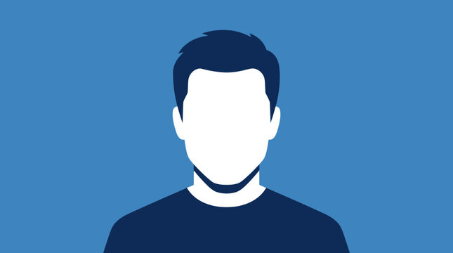

Our mission
Make quality creative and digital growth support accessible to organizations ready to do meaningful work.
Welyd Networks

People with purpose
We are Welyd Networks: a Nairobi-based creative partner helping organizations tell a clearer story, show up with confidence, and grow with intention.
Our story
Welyd Networks began with a simple belief: the best marketing happens when strategy, design, and digital experience work together. Too many good businesses were juggling disconnected services and unclear messages.
For four years, we have helped Nairobi organizations bring those pieces into focus. We learn what makes each business distinctive, then turn that understanding into practical creative work—from the first identity sketch to the website and the campaign that brings people to it.
We are still growing, still learning, and always focused on making the next step clearer for our clients.
Let's talk about your goalsWhat guides us
Our work is shaped by clear thinking, respect for your business, and a belief in useful creativity.
Make quality creative and digital growth support accessible to organizations ready to do meaningful work.
A thriving community of Kenyan businesses with the clarity and confidence to compete and connect.
Curiosity, craft, honesty, collaboration, and a commitment to doing useful work well.
The difference is in the details
We balance ambitious ideas with the practical realities of running a business. Every engagement is designed around the outcome you need, not a one-size-fits-all process.
Understanding your audience, constraints, and goals means fewer assumptions and more relevant work.
Clear scope, milestones, and communication help you stay informed and confident as work progresses.
Your brand, content, campaigns, and website should feel like parts of one experience.
The people behind the pixels
Team profiles below are sample placeholders. Replace them with approved names, roles, biographies, and photographs.

Turns ambitious business goals into a clear, collaborative plan.
LinkedIn.jpg)
Builds distinctive visual identities that are easy to put to work.
LinkedInConnects content and campaigns to measurable customer action.
LinkedIn
Shapes user-friendly websites that bring the brand story to life.
LinkedInOur journey
Four years ago, we set out to connect creative work with business growth.
Early partnerships across local retail, education, and community organizations.
Integrated brand, website, and campaign services become part of one offer.
More than 15 clients and 20 projects—and plenty more good work ahead.
Tools that help us do our best work
We choose tools to fit your project, keep collaboration straightforward, and make the finished work manageable for your team. Tools and partner credentials below are indicative examples; confirm actual use and certifications before publishing.
Partners & credentials
We work with trusted digital platforms and specialist collaborators when a project needs additional expertise. No unverified partner badges or certification claims are published here.
Ask about our approachLet's build something meaningful
Tell us where you want to go. We'll help you find a practical way to get there.